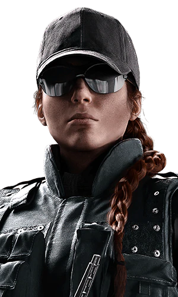

Les différents personnages du jeu Rainbow6: Siege !
Pour en savoir plus sur toutes les catégories des personnages :
Ash est un agent rapide de première ligne, capable de s'infiltrer discrètement, de contourner l'ennemi ainsi que de détourner l'attention des défenseurs en quelques secondes. Ash est capable de s'infiltrer discrètement et à distance grâce à son M120 CREM modifié et ses munitions d'infiltration. Cliquez sur le personnage !

Le Réplicateur Gemini est une copie holographique de Iana, contrôlée à distance. Elle peut se déplacer et émet des bruits comme elle le ferait, mais la copie ne peut tirer, attaquer au corps à corps ou utiliser de gadget. Sa durée est limitée et elle peut être désactivée à tout instant. Il y a toujours un temps de recharge entre deux utilisations, qui est plus long si la copie est détruite. Cliquez sur le personnage !

Le chalumeau "fait maison" de Maverick peut percer n'importe quelle surface, y compris les murs renforcés et les trappes. Il nécessite une poigne ferme et une certaine connaissance de l'environnement pour créer de petits trous et des lignes de vue. Maverick doit se tenir près de la surface choisie pour utiliser son gadget. Celui-ci ne fait presque pas de bruit, mais s'épuise rapidement. Cliquez sur le personnage !